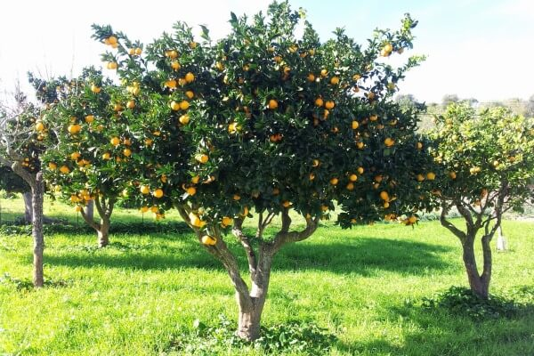

Guia de Plantacion de Arboles Frutales
Naranjo

Descripcion
El naranjo es un árbol de tamaño mediano, de tres a cinco metros de altura, con copa redondeada y ramas regulares. Un solo tronco, derecho y cilíndrico, verdoso primero y gris después. Las ramas aparecen a un metro, poco más o menos, del suelo. Las hojas son perennes, medianas y alargadas, con base redondeada y terminadas en punta. Las flores aparecen en las axilas de las hojas, solitarias o en racimos.
El naranjo puede reproducirse por germinación de una semilla, por trasplante de una estaca o por acodo, es decir, partiendo de una raíz. En cualquier caso ha de transcurrir un cierto tiempo en el
Cuidados
Clima
Es una especie subtropical. No tolera las heladas, ya que sufre tanto las flores y frutos como la vegetación, que pueden desaparecer totalmente.
Presenta escasa resistencia al frío (a los 3-5 ºC bajo cero sufre bastante).
Terreno
El ideal es el arenoarcilloso con cierta cantidad de humus y siempre bien profundos. Por norma general, los terrenos para el citrus deben ser altos, con fácil drenaje, con mucha luz, aire y mucho espacio.
Plagas más comunes
MOSCA BLANCA
El adulto de la mosca blanca crea una melaza que puede cubrir por completo la hoja (envés), propiciando el desarrollo de la enfermedad de la negrilla. Además esta melaza debilita la formación de brotes y atrae a nuevas plagas del naranjo, como cochinillas y ácaros, además de algunas enfermedades.
Una forma de descubrir la mosca blanca entre las plagas del naranjo se basa en observar la circulación de hormigas (atraídas por la melaza) subiendo por el tronco hasta las hojas.
ACARO
Presentan un tamaño muy reducido, en torno a 0,3 – 0,6 mm. Se pueden dividir en dos tipos, araña roja (Tetranychus urticae) y ácaro rojo (Panonychus citri). Los daños que presentan sobre el naranjo son los siguientes:
Araña roja: Se dispone en el envés de las hojas, tomando ésta un color amarillento y una formación cóncava.
Ácaro rojo: las picaduras de éste ácaro tornan la hoja de color mate, provocando los mayores daños al finalizar el verano y comenzar el otoño.